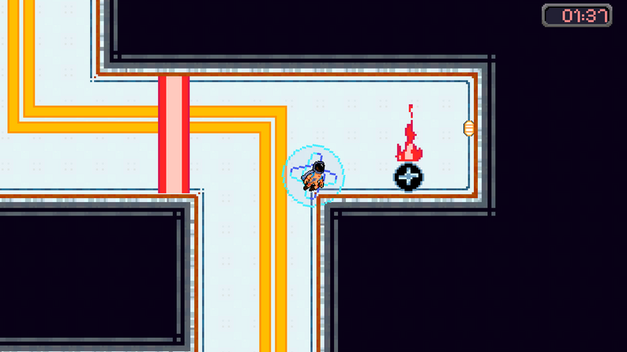
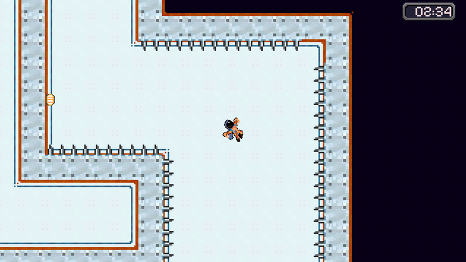

Platformer · GMTK Game Jam 2026
A mayday in space. The ship is coming apart around you, and the only way out is up. Dash, chain jumps, and read the room fast, because the room is actively falling apart.


Made in 48 hours for GMTK Game Jam 2026, one of the largest game jams in the world. The core mechanic is a dash you can hold to charge, trading control for distance. Everything else, the hazards (spikes, fire, bouncy walls), the colored gates, the power-ups, exists to make that one decision, tap or hold, matter every time you make it.
Design & Programming: Xavier Lopes · Programming: Daniel Santos, João Baptista · Art: Jason Morgado, Lucas Cruz, Vitor Almeida